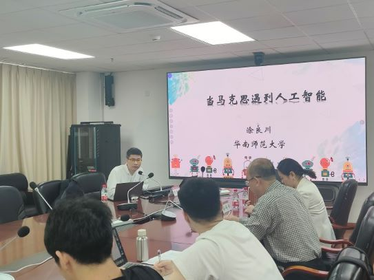
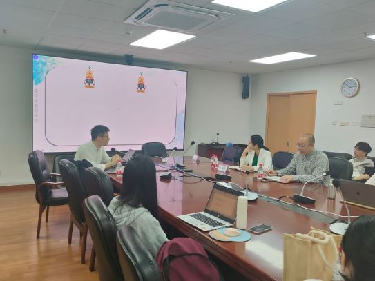
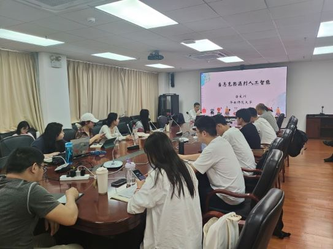

<td align="center" class="tbcolor10" colspan="2" valign="top">
<table border="0" cellpadding="0" height="100%" width="100%">
<tbody><tr><td align="right" height="35px" style="font-size:9pt">
<a href="javascript:window.close()" title="关闭本窗口">关闭窗口</a>｜<a href="print.asp?id=545181" target="_blank" title="打印本页内容">打印张贴版</a>    

</td></tr>
<tr>
<td align="center" height="500" valign="top">
<table border="0" cellpadding="4" cellspacing="0" height="100%" style="border-collapse: collapse;word-break:break-all;" width="86%">
<tbody><tr>
<td align="center" height="80px"><span style="font-family:方正小标宋简体;font-size: 25px;color: #C70E5C">马学科研究生培养质量提升工程之名家系列谈第二期《当马克思与人工智能相遇》学术讲座成功举行</span></td>
</tr>
<tr>
<td align="center" height="50px" style="font-size: 9pt"><font color="#808080">马克思主义学院　2025/4/14 15:51:00</font><br/> 
<font color="#F8F8F8" style="font-size:9pt">（钟沛基 2022280095）</font></td>
</tr>
<tr>
<td height="300" valign="top">
<p class="MsoNormal" style="margin-bottom:6.0pt;mso-para-margin-bottom:.5gd;
text-indent:30.0pt;mso-char-indent-count:2.0;line-height:200%">2025 年 4月10日上午，马克思主义学院于汇文楼 1600 会议室成功举办了马学科研究生培养质量提升工程之名家系列谈——“当马克思与人工智能相遇”学术讲座。本次讲座特邀华南师范大学马克思主义学院副院长、教授、广东省习近平新时代中国特色社会主义思想研究中心特约研究员涂良川担任主讲人，讲座由马克思主义学院副院长孙婷婷副教授主持，学院师生30余人到场聆听。</p><p class="MsoNormal" style="margin-bottom:6.0pt;mso-para-margin-bottom:.5gd;
text-indent:30.0pt;mso-char-indent-count:2.0;line-height:200%">          </p><p class="MsoNormal" style="margin-bottom:6.0pt;mso-para-margin-bottom:.5gd;
text-indent:30.0pt;mso-char-indent-count:2.0;line-height:200%"></p><p class="MsoNormal" style="margin-bottom:6.0pt;mso-para-margin-bottom:.5gd;
text-indent:30.0pt;mso-char-indent-count:2.0;line-height:200%">讲座中，涂教授指出，马克思主义作为一种理论思维和认识工具，始终强调理论应引领世界，而非仅仅是反思。涂教授强调，马克思主义的核心在于理解时代，而非仅仅定义时代，而人工智能正是当今时代的最大现实问题。在讨论人工智能与社会历史维度的关系时，涂教授指出，人工智能作为社会存在的表现形式，其发展与社会历史逻辑紧密相连。数字孪生技术对社会历史生存状态的影响也成为讨论的焦点之一。此外，人工智能与政治维度的关系也备受关注。人工智能的发展涉及政治问题，如技术封锁、技术权利等。涂教授强调，人工智能对人类自由发展的影响，以及如何通过政治中介实现这种发展，是当前亟待解决的问题。同时涂教授建议，目前研究人员需要从理论和实践两个层面深入研究人工智能与马克思主义的关系。一方面，需要进一步研究人工智能如何改变社会结构和人类自身；另一方面，需要探讨如何将马克思主义的理论应用于人工智能的实际应用中。此外，涂教授还鼓励研究生和研究人员从马克思主义的角度思考人工智能问题，以培养更多具有创新思维的研究人才。</p><p class="MsoNormal" style="margin-bottom:6.0pt;mso-para-margin-bottom:.5gd;
text-indent:30.0pt;mso-char-indent-count:2.0;line-height:200%">          </p><p class="MsoNormal" style="margin-bottom:6.0pt;mso-para-margin-bottom:.5gd;
text-indent:30.0pt;mso-char-indent-count:2.0;line-height:200%">在讲座的总结环节，孙婷婷副院长首先对涂良川教授的精彩讲解表示衷心感谢。她指出，涂教授的讲座内容丰富，充分展现了涂教授深厚的学识、广阔的视野、深邃的思考以及哲学的高度。她提到，涂教授的讲解不仅让我们深刻感受到马克思主义理论在新时代背景下的强大生命力，还让我们领略到了一种独特的学术魅力和充满逻辑张力的理论话语。</p><p class="MsoNormal" style="margin-bottom:6.0pt;mso-para-margin-bottom:.5gd;
text-indent:30.0pt;mso-char-indent-count:2.0;line-height:200%">        　</p><p class="MsoNormal" style="margin-bottom:6.0pt;mso-para-margin-bottom:.5gd;
text-indent:30.0pt;mso-char-indent-count:2.0;line-height:200%"></p><p class="MsoNormal" style="margin-bottom:6.0pt;mso-para-margin-bottom:.5gd;
text-indent:30.0pt;mso-char-indent-count:2.0;line-height:200%">随后进入提问环节，现场气氛活跃，同学们积极提问，涂教授对同学们的问题一一解答。</p><p class="MsoNormal" style="margin-bottom:6.0pt;mso-para-margin-bottom:.5gd;
text-indent:30.0pt;mso-char-indent-count:2.0;line-height:200%">“马学科研究生培养质量提升工程之名家系列谈”以提升研究生培养质量为核心目标，致力于拓学生的学术视野，夯实其理论基础，并激发创新思维。本次讲座聚焦马克思主义与人工智能的交叉领域，不仅契合了系列谈的初衷，也为马克思主义学科的创新发展开辟了新路径。未来，马克思主义学院将持续推动此类跨学科研究，探索更多学科融合的可能性，为应对时代新课题贡献更多智慧与力量。</p><p class="MsoNormal" style="margin-bottom:6.0pt;mso-para-margin-bottom:.5gd;
text-indent:30.0pt;mso-char-indent-count:2.0;line-height:200%"><br/></p><p></p><p></p></td>
</tr>
<tr><td height="0" style="font-size: 9pt"></td></tr>
<tr><td align="right" style="font-size: 9pt">撰稿：马克思主义学院　审核：马克思主义学院  <br/> </td></tr>
</tbody></table>
</td>
</tr>
</tbody></table>
</td>
